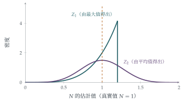

STEP III 1998，第 14 題
繼續之前，請先閱讀題目（原題為英文）。題目載於 STEP Support Programme 的題目資料庫： step.maths.org/questions/98-s3-q14
引子
第二次世界大戰期間，盟軍情報部門想知道德國每月生產多少輛坦克。間諜的報告顯示每月約 \(1400\) 輛。統計學家則另闢蹊徑：繳獲的坦克在變速箱和其他零件上都刻有序號，而這些序號實際上就是從 \(1, 2, \ldots, N\) 中抽出的一個隨機樣本（random sample）。單憑這些數字，他們估計產量約為每月 \(250\) 輛。按照一般引用的數字，戰後查閱的德國紀錄顯示為 \(245\) 輛。統計學家的估計遠比間諜準確。
本題比較兩種利用序號估計 \(N\) 的方法。兩者平均而言都是正確的，但其中一種運用數據的效率遠高於另一種；弄清楚是哪一種，就會引出估計理論（estimation theory）的核心思想：在平均而言正確的估計量（estimator）當中，應選取波動最小的一個。
動筆之前
設 \(M\) 是 \([0, N]\) 上 \(n\) 個獨立均勻分佈（uniform distribution）取值中的最大者，那麼 \(\mathrm{P}(M \leq m)\) 是多少？
\(M \leq m\) 當且僅當每個 \(X_i \leq m\)，所以當 \(0 \leq m \leq N\) 時，\(\mathrm{P}(M \leq m) = \bigl(\frac mN\bigr)^n\)（可與 第 12.25 節 比較）。求導後可知，\(M\) 的概率密度（density）為 \(\frac{nm^{n-1}}{N^n}\)。
逐步解題
階段 1 兩者皆無偏
對於 \(M\)： \[\mathrm{E}(M) = \int_0^N m\cdot\frac{nm^{n-1}}{N^n}\,\mathrm{d}m = \frac{n}{n + 1}N, \qquad\text{所以}\qquad \mathrm{E}(Z_1) = \frac{n + 1}{n}\cdot\frac{n}{n + 1}N = N.\] 對於平均值：每個 \(X_i\) 的平均值為 \(\frac N2\)，所以 \(\mathrm{E}(Z_2) = \frac2n\cdot n\cdot\frac N2 = N\)。■
兩個估計量都是無偏（unbiased）的：平均而言，它們會給出正確的答案。因子 \(\frac{n + 1}{n}\) 用來修正這個事實：觀察到的最大序號總是比 \(N\) 略小一點。
階段 2 兩者的方差
求 \(\mathrm{E}(M^2)\)，從而求 \(\mathrm{Var}(M)\)。至於 \(Z_2\)，單一個 \([0, N]\) 上的均勻變量的方差（variance）是多少？
\(\mathrm{E}(M^2) = \int_0^N m^2\cdot\frac{nm^{n-1}}{N^n}\,\mathrm{d}m = \frac{n}{n + 2}N^2\)，所以 \[\begin{aligned} \mathrm{Var}(M) &= \frac{n}{n + 2}N^2 - \frac{n^2}{(n + 1)^2}N^2 = \frac{nN^2}{(n + 1)^2(n + 2)}, \\ \mathrm{Var}(Z_1) &= \frac{(n + 1)^2}{n^2}\mathrm{Var}(M) = \frac{N^2}{n(n + 2)}. \end{aligned}\] \([0, N]\) 上的均勻變量的方差為 \(\frac{N^2}{12}\)，而各個 \(X_i\) 互相獨立，所以 \[\mathrm{Var}(Z_2) = \frac{4}{n^2}\cdot n\cdot\frac{N^2}{12} = \frac{N^2}{3n}. \qed\]
階段 3 哪一個較好？
比較 \(\frac{1}{n(n + 2)}\) 與 \(\frac{1}{3n}\)。當 \(n\) 增大時，兩者如何變化？
兩者之比為 \(\frac{\mathrm{Var}(Z_1)}{\mathrm{Var}(Z_2)} = \frac{3}{n + 2}\)，當 \(n \geq 2\) 時小於 \(1\)（當 \(n = 1\) 時則相等，此時兩個估計量完全相同）。所以 \(Z_1\) 較好，而且 \(n\) 愈大就好得愈多：它的標準差（standard deviation）以 \(\frac1n\) 的速度縮小，而 \(Z_2\) 的標準差只以 \(\frac{1}{\sqrt n}\) 的速度縮小（圖 13.3.1）。若有 \(n = 10\) 個序號，\(Z_1\) 的標準差約為 \(N\) 的 \(9\%\)，而 \(Z_2\) 的約為 \(18\%\)。
選用 \(Z_1\) 還有另一個理由：\(Z_2\) 有時會得出荒謬的結果。若序號為 \(10\)、\(20\) 和 \(300\)，則 \(Z_2 = \frac23 \cdot 330 = 220\)，比我們實際見過的一個序號還要小。而 \(Z_1 = \frac43 \cdot 300 = 400\) 永遠不會小於最大的觀察值。■

回顧
無偏性。每個估計量都經過縮放，使其期望值（expected value）恰好等於 \(N\)。
比較方差。在無偏估計量當中，方差較小的一個較為可靠。
選用信息量最大的統計量。最大值包含了樣本中關於 \(N\) 的全部信息；平均值則浪費了其中一大部分。
背後的數學
充分性
為甚麼最大值好這麼多？一旦知道最大值 \(M\)，其餘各值不論 \(N\) 是多少，都只是在 \([0, M]\) 上均勻分佈：它們再沒有帶來關於 \(N\) 的任何信息。最大值是一個充分統計量（sufficient statistic）。C. R. Rao 與 David Blackwell 的一條定理（1945–47）指出，任何無偏估計量，只要換成它在給定充分統計量下的期望值，都可以得到改進，或至少不會變差；在這裏，這個做法正好把 \(Z_2\) 變成 \(Z_1\)。Lehmann–Scheffé 定理進一步證明，\(Z_1\) 是方差最小的無偏估計量。還要留意，\(Z_1\) 的方差以 \(\frac{1}{n^2}\) 的速度下降，比大多數估計量的 \(\frac1n\) 更快：這是因為 \(N\) 是分佈的端點，數據會擠向這個端點。
離散版本
真實的序號是整數 \(1, 2, \ldots, N\)，並且是以不放回（without replacement）方式抽樣的。這時最佳的無偏估計是 \(\hat N = m + \frac mk - 1\)，其中 \(m\) 是 \(k\) 個觀察到的序號中的最大者：即最大值加上各觀察值之間的平均間距。盟軍統計學家運用這類估計，主要根據變速箱和車輪的序號，估計德國的產量約為每月 \(246\) 輛坦克；相比之下，其後在德國紀錄中找到的數字是 \(245\) 輛，而情報報告所顯示的是 \(1400\) 輛。
此後這個方法曾多次派上用場，例如分析員曾根據最先售出的幾件產品的序號，估計某款新消費產品的生產數量。製造商汲取了教訓：現在不少製造商都會把序號編碼，使人無法把它們當作簡單的順序編號來解讀。Richard Ruggles 與 Henry Brodie 於 1947 年在 Journal of the American Statistical Association 上記述了這項戰時工作。
思維技巧
估計量是一個隨機變量（random variable）。要問它平均而言是否正確（偏差），以及它的波動有多大（方差），然後選取誤差較小的一個。
在大學，這會引出有效估計（efficient estimation）的理論：Cramér–Rao 下界（Cramér–Rao bound）指出無偏估計量的方差最小可以小到甚麼程度，而充分性則說明如何達到這個下界。
延伸練習
均方誤差（mean squared error）。有偏估計量 \(M\) 滿足 \(\mathrm{E}(M - N)^2 = \mathrm{Var}(M) + \bigl(\mathrm{E}(M) - N\bigr)^2\)。計算此值，並與 \(\mathrm{Var}(Z_1)\) 比較。求使 \(\mathrm{E}(cM - N)^2\) 取最小值的常數 \(c\)。
最小值也可以。證明 \((n + 1)\min\{X_i\}\) 也是 \(N\) 的無偏估計量，並求它的方差。這個估計量好用嗎？
離散公式。對於序號 \(1, \ldots, N\)，以不放回方式抽取 \(k\) 個，其中最大者為 \(m\)。證明 \(\mathrm{P}(\max \leq m) = \binom mk\big/\binom Nk\)，並驗證當 \(k = 1\) 時 \(m + \frac mk - 1\) 是無偏的。
坦克。若 \(5\) 輛繳獲的坦克的序號為 \(19\)、\(40\)、\(42\)、\(60\)、\(98\)，試估計坦克的生產數量。
延伸閱讀
Richard Ruggles & Henry Brodie, “An empirical approach to economic intelligence in World War II”，Journal of the American Statistical Association 42 (1947)。最初的記述。
John Rice, Mathematical Statistics and Data Analysis（Duxbury），論及偏差、方差與充分性。
David Spiegelhalter, The Art of Statistics（Pelican）。